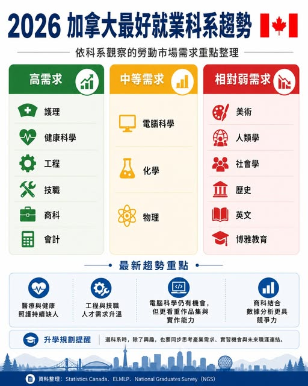

《看懂制度，選對世界》第一集
2026 加拿大最好就業的科系
New Release！【2026 加拿大最好就業的科系】 加拿大近年熱門科系分成三類： 高需求： 中等需求：電腦科學、化學、物理 相對弱需求：美術、人類學、社會學、歷史、英文、博雅教育 背後反映出2個重要變化：

New Release！【2026 加拿大最好就業的科系】 加拿大近年熱門科系分成三類： 高需求： 中等需求：電腦科學、化學、物理 相對弱需求：美術、人類學、社會學、歷史、英文、博雅教育 背後反映出2個重要變化：
1. AI已經影響到加拿大的就業市場
2. 加拿大企業需要能補上產業缺口、具備實作能力人才。１、 仍是高需求領域 加拿大人口老化，醫療與照護人力長期吃緊，因此： 護理 健康科學 公共衛生 復健相關 老人照護 社會工作 這些方向仍然具有較多就業入口，也較容易與實習、工作、移民規劃連結。２、 需求升溫 加拿大近年越來越重視能進入產業現場的人才。工程、營建、電機、機械、技職類課程，都與實際職缺高度相關。
Skilled Trades 技職 Engineering 工程 Construction 營建 Electrical 電機 Mechanical 機械 對台灣學生來說，大學學位重要，實作能力與技術專長同樣重要。３、電腦科學仍有機會，但競爭變高 Computer Science 仍是熱門選擇，但加拿大科技職缺已經更看重學生是否具備實際能力。比較有優勢的方向包括： AI 應用 網路安全 數據分析 雲端系統 機器學習 軟體工程 現在的重點已經不是「有讀 CS」就夠，而是要有作品集、實習、GitHub、專案經驗。
４、商科與會計仍有空間 商科依然是熱門科系，但傳統管理類課程競爭較高。若能 Business + Data Analytics Accounting + CPA 路線 Finance + Excel / Python / Power BI Marketing + AI 工具 / 廣告投放 Supply Chain + ERP 系統 因為涉及企業財務、稅務、審計與合規，仍屬於較具需求的方向。５、文科與藝術類要強化轉職能力 美術、歷史、英文、社會學、人類學、博雅教育等科系，並非沒有價值，但職涯出口通常比較需要另外設計。
學生可以補強： 內容企劃 社群經營 影像設計 市場研究 UX Research 教育與出版 AI 工具應用 文科學生若能把寫作、研究、溝通與創意轉成企業需要的能力，仍然可以走出自己的方向。Peter觀點 加拿大就業市場正在走向「技能導向」。未來更受歡迎的學生，通常具備三種特質： 有專業 有實作 有跨領域能力 是否有利於未來工作與移民規劃 對準產業，再累積技能，會是加拿大升學與就業規劃的核心。